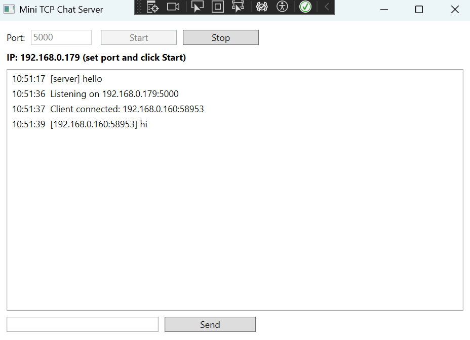

WPF TCP/IP Client - Desktop Application for Network Communication
Overview
This WPF TCP/IP Client is a basic desktop application with a chat box to allow for communication between a client and server over a TCP/IP connection. It demonstrates fundamental networking concepts using C# and WPF.
Key Features
- Establishes a TCP/IP connection to a server.
- Sends and receives messages in real-time.
- User-friendly chat interface built with WPF.
- Error handling for network issues.
Technologies Used
- C#
- Windows Presentation Foundation (WPF)
- .NET Framework
- TCP/IP Networking
Screenshots
